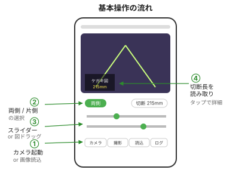
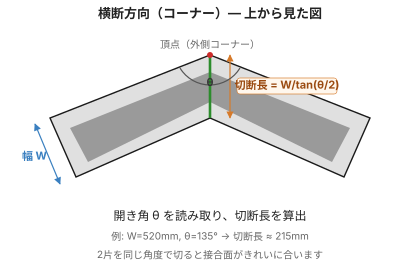
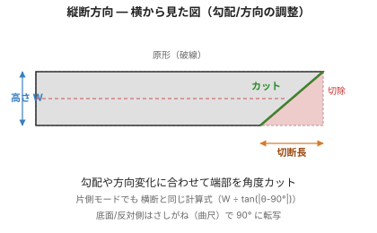
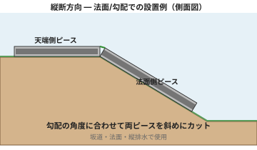
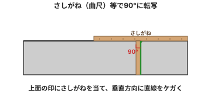

縁石・ブロック・幅木・タイル・額縁などの角度カットも、同様の手順で行えます。
2本の側溝を角度をつけて接続する場合。両側モードで2本とも同じ角度に斜めカットします。

側溝の長手方向で角度を変える場合。基本的な測定方法は横断と同じ。


集水桝など、片側だけ構造物に接続する場合に使用。

※ 実用上は、数mm〜1cmの余裕と切断後の目地での微調整で吸収できるため、垂直に降ろすだけでも問題ありません。